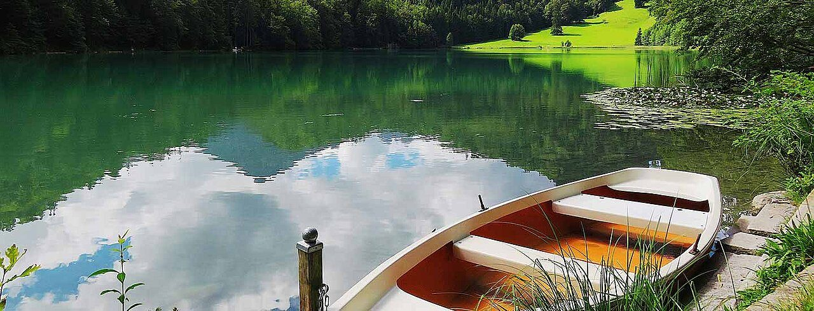
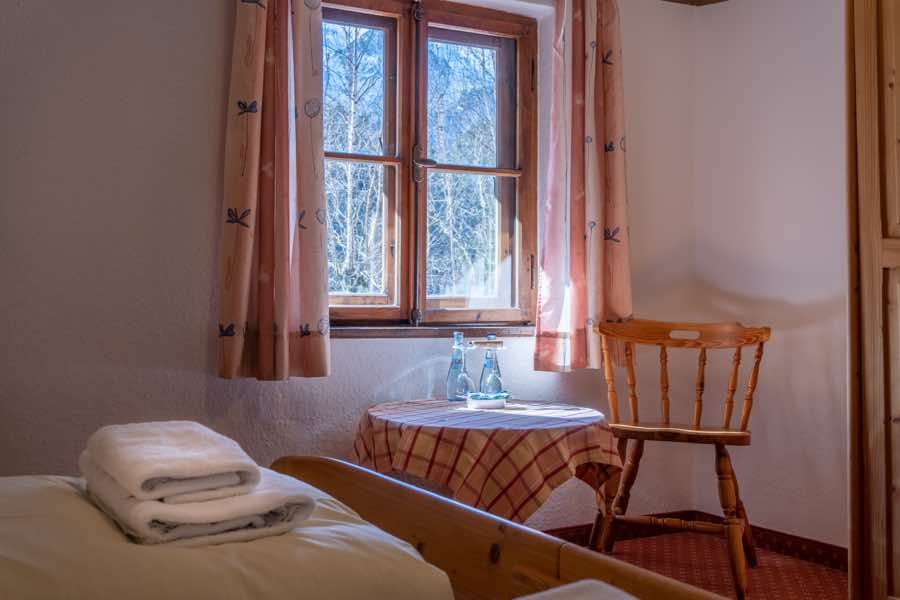
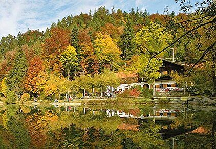

ALATSEE Hotel & Restaurant · Bad Faulenbach bei Füssen
Ein Haus am Bergsee, der Wald ringsum – und die Königsschlösser gleich nebenan.
Seit 1935 steht das Haus direkt am Alatsee, mitten im Wald im „Tal der Sinne“. Familiengeführt, mit gemütlichen Landhauszimmern, einer Liegewiese am See und einem Restaurant, in dem Miriam und Janos Kemmler am Abend alpenländisch kochen. Übernachtung mit Frühstück, Preise auf Anfrage.
- 1935
- seit über 90 Jahren am Alatsee
- 4,4
- von 5 bei Google, 1.969 Bewertungen
- 15 Min.
- mit dem Auto zu Neuschwanstein und Hohenschwangau
Restaurant am Alatsee
Am Mittag die Tageskarte, am Abend alpenländische Küche.
Die beiden Chefköche Miriam und Janos Kemmler haben in renommierten Häusern gekocht – Miriam in leitender Position bei Alfons Schuhbeck, Janos unter anderem bei Bobby Bräuer. Am Alatsee gibt es mittags eine frische Tageskarte, am Abend exquisite alpenländische Küche. Alle Gerichte werden frisch zubereitet.
Öffnungszeiten
- Montag und Dienstag
- 11 – 17:30 Uhr
- Mittwoch bis Sonntag
- 11 – 20 Uhr
- Küche
- 11:30 – 16:30 Uhr, Mi–So auch 18 – 18:45 Uhr
- Dezember bis April
- Dienstag Ruhetag
Betriebsurlaub vom 9.11. bis 3.12.2026 – ab dem 4.12. ist das Haus wieder geöffnet. Anfragen in dieser Zeit gern per E-Mail.
-
 Suppe als Vorspeisefein angerichtet, aus der eigenen Küche
Suppe als Vorspeisefein angerichtet, aus der eigenen Küche -
 Fisch als Hauptspeiseknusprig gebraten, mit Gemüse der Saison
Fisch als Hauptspeiseknusprig gebraten, mit Gemüse der Saison -
 Fleisch als Hauptspeiserosa gebraten, mit Beilagen nach Jahreszeit
Fleisch als Hauptspeiserosa gebraten, mit Beilagen nach Jahreszeit -
 Dessert als Nachspeisesüßer Abschluss vom Patissier-Teller
Dessert als Nachspeisesüßer Abschluss vom Patissier-Teller


Überraschungsmenüs & Feiern
Auf Vorbestellung kochen die Kemmlers Überraschungsmenüs: drei Gänge für 42,50 €, vier Gänge für 49,50 € pro Person. Für Geburtstage, Hochzeiten und Weihnachtsfeiern stehen die Räume des Hauses bereit – stellen Sie eine unverbindliche Anfrage.
Fest anfragenZimmer & Apartment
Landhauszimmer im Wald, der See vor der Tür.
Die Gästezimmer sind im gemütlichen Landhausstil eingerichtet, jedes mit eigenem Waschbecken; die 2011 komplett renovierten Duschen und Bäder liegen auf der Etage. Dazu ein renoviertes Apartment mit Schlafzimmer, Schlafcouch im Wohnzimmer, SAT-TV und eigenem Duschbad von 2016. Hunde und Katzen sind willkommen, der Eintritt ins Sportstudio Füssen ist für Hausgäste kostenlos.
| Zimmer | Preis | Verpflegung | Anfragen |
|---|---|---|---|
| 1–3 Personen · Waschbecken im Zimmer · Dusche/Bad auf der Etage | auf Anfrageinkl. Frühstück | HP + 29,50 € pro Person, 3-Gang-Menü | |
| bis 4 Personen · eigenes Duschbad · Schlafzimmer + Wohnzimmer mit Schlafcouch | auf Anfrageinkl. Frühstück | HP + 29,50 € pro Person, 3-Gang-Menü |
- Alle Preise inkl. Frühstück und gesetzlicher Mehrwertsteuer, zzgl. Kurtaxe. Kinder bis 3 Jahre frei, bis 12 Jahre halber Preis.
- Haustiere (Hund oder Katze) 9,00 € pro Nacht. Bei nur einer Übernachtung: Einzel-Nacht-Zuschlag 10,50 €.
- Stornierung bis 7 Tage vor Anreise kostenfrei; danach wird die gesamte Buchung berechnet.

Das sagen die Gäste
„Traumhafte Lage“ – sagen fast 2.000 Google-Bewertungen.
- OpenTable
- 4,8
- 4,8
- Tripadvisor
- 4,0
- Restaurant Guru
- 4,8
Portalnoten laut restaurantguru.com, 24. November 2026 · OpenTable 206, Facebook 57, Tripadvisor 70 Bewertungen
«Rustikales Hotel in traumhafter Lage, perfekt für Ruhesuchende und Naturfreunde. Der Service war außergewöhnlich freundlich und familiär, man fühlt sich sofort willkommen. Kein Luxus, kein Schnickschnack – dafür viel Herzlichkeit und Qualität. Wir kommen gerne wieder!»
Esmeralda Kimmicher · Google«Immer wieder gerne.»
Oleg Kolomiez · Google«Herzliche Gastlichkeit, raffinierte Küche und besondere Veranstaltungsideen bieten Miriam und Janos Kemmler am Alatsee.»
Füssen aktuell, Heft 5/2011
Der Alatsee & Anreise
Ein Bergsee an der Grenze zu Österreich – und das Haus steht direkt daran.
Der Alatsee liegt rund 6 km westlich vom Stadtzentrum Füssen, unmittelbar an der österreichischen Grenze: etwa 490 m lang, 290 m breit und an der tiefsten Stelle 32,1 m tief. Wanderwege führen direkt vom Haus los – zur Saloberalm, nach Vils in Österreich oder in einer guten halben Stunde über den befestigten Wanderweg ins Zentrum von Füssen. Nach der Wanderung: die Liegewiese am See.

- Königsschlösser Neuschwanstein & Hohenschwangau
- ca. 15 Min. mit dem Auto
- Stadtzentrum Füssen
- 6 km · zu Fuß eine gute halbe Stunde
- Vils (Österreich)
- zu Fuß erreichbar
- Saloberalm
- Ausflug im Sommer, im Winter mit dem Schlitten
- Obersee und Mittersee
- beliebte Badeseen, vom Alatsee gespeist
- Weitere Seen
- Weißensee, Hopfensee, Forggensee, Bannwaldsee
Anreise
ALATSEE Hotel & Restaurant · Am Alatsee 1 · 87629 Füssen / Allgäu+49 8362 6205info@hotel-alatsee.de
Von Füssen über Bad Faulenbach, die Straße „Am Alatsee“ endet direkt am Haus. Zu Fuß: der Wanderweg durchs Faulenbacher Tal, eine gute halbe Stunde ab Stadtzentrum.
Die Karte wird erst nach dem Klick von OpenStreetMap geladen.


Das Haus
Seit 1935 am See – heute von Familie Kemmler geführt.
Ende des 19. Jahrhunderts erwarb die Stadt Füssen auf einer Gastronomieausstellung in Nürnberg ein Holzhaus und stellte es an den Alatsee. Seit 1935 steht an dieser Stelle das Hotel Alatsee; 2011 wurde es renoviert, ohne dass der „Gasthof Alatsee“ sein vertrautes Flair verloren hat.
Heute führen die Chefköche Miriam und Janos Kemmler das Haus: Landhauszimmer, belebtes Granderwasser, Relax-Massagen auf Voranmeldung – und eine Küche, für die Gäste eigens an den See fahren.